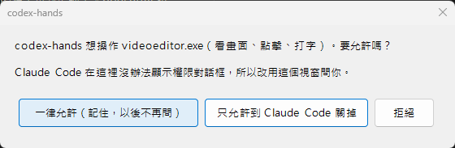

codex-hands 使用說明
讓 Claude Code 幫你操作 Windows 上的 app：看畫面、點擊、打字。不用打指令，把下面的話複製貼給 Claude Code 就好。
①安裝
只做一次。電腦上要先有 Codex app（Microsoft Store 的「Codex」，OpenAI 出的）；沒有的話 Claude 會告訴你。
- 打開 Claude Code（桌面 app 的 Code 分頁，或終端機裡的
claude）。 - 複製這段，貼給 Claude Code 送出：
貼給 Claude CodeClaude Code 會自己從 GitHub 下載 plugin，你不用先下載。要操作哪些 app 不用先設定，第一次用到時 Claude Code 會問你。
請幫我安裝 codex-hands plugin，讓你可以操作我電腦上的 Windows app。plugin 在 GitHub：https://github.com/linfengwei/codex-hands。請依序做，每一步告訴我結果，失敗就停下來告訴我怎麼辦： 1. 確認有安裝 Codex app：在 PowerShell 執行 Get-AppxPackage -Name OpenAI.Codex。沒有的話，請我從 Microsoft Store 安裝「Codex」（OpenAI）。 2. 確認有 Node：執行 node --version。 3. 安裝 plugin：執行 claude plugin marketplace add linfengwei/codex-hands，再執行 claude plugin install codex-hands@codex-hands。 4. 試啟動：在 Claude Code 下載它的資料夾（%USERPROFILE%\.claude\plugins\marketplaces\codex-hands）執行 node test/smoke.mjs，輸出要有 tools: 那一行。 做完後提醒我關掉 Claude Code 再打開。
- Claude Code 問「可以執行這個指令嗎？」時，選允許。
- 它說完成後，關掉 Claude Code 再打開，就可以開始用了。
貼上之後會發生什麼示意
請幫我安裝 codex-hands plugin，讓你可以操作我電腦上的 Windows app…
✓ 1. Codex app 已安裝（OpenAI.Codex 26.1016.6573.0）
✓ 2. Node v22.20.0
Claude Code：可以執行
claude plugin install codex-hands@codex-hands 嗎？允許✓ 3. plugin 已安裝
✓ 4. 試啟動成功，14 個工具都在
完成。請關掉 Claude Code 再打開，之後打
/codex-hands:do 加上要做的事就可以開始用。②使用
在 Claude Code 打 /codex-hands:do，後面用一般的話說：哪個 app、要做到什麼。Claude 會先截圖看畫面，一次做一個動作，做完再截圖確認。不打斜線直接說也可以，但 Claude 不一定每次都會用到這個 plugin。
貼給 Claude Code：只看不動
/codex-hands:do 截一張 Video Editor 現在的畫面給我看，告訴我它停在哪一頁
貼給 Claude Code：完成一件事
/codex-hands:do 在 Video Editor，把「最近使用」的第二段影片加到時間軸，完成後截圖給我看
貼給 Claude Code：檢查狀態
/codex-hands:do 看一下 Video Editor 現在的「匯出」按鈕能不能按，不要按下去
第一次碰某個 app 時會問你。在終端機的
claude，是 Claude Code 自己的對話框：codex-hands 想操作 videoeditor.exe（看畫面、點擊、打字）。要允許嗎？示意
一律允許（記住，以後不再問）只允許到 Claude Code 關掉拒絕
在 Claude 桌面 app，Claude Code 沒辦法跳對話框，所以改跳這個 Windows 小視窗，選項一樣（實際畫面）：

只有你能回答，Claude 不能替你選。3 分鐘內沒回答就當作不允許。終端機這類危險的 app 一律拒絕，不會問。
第一次用某個工具時，Claude Code 也會問：
Claude 想使用 codex-hands 的 click，要允許嗎？示意
是是，以後不用再問否
Esc操作時隨時按 Esc，它就立刻停，不會再點擊或打字。要繼續就再跟它說一次。
它操作的樣子（示意圖）
- 看畫面你說「在 Video Editor 加一段影片」。Claude 截圖，看到首頁，點左邊的「影片工具」。
- 點「影片編輯器」點完拿到新截圖：影片工具頁。接著點「影片編輯器」。
- 點一段影片新截圖：空的編輯器。點「最近使用」裡 00:15 的影片。
- 確認完成新截圖：時間軸上多了一段影片。Claude 回報完成，附上截圖。
③遇到問題
找你看到的那一行，把右邊那段貼給 Claude Code。
| 你看到的 | 貼給 Claude Code |
|---|---|
| 不小心在對話框按了拒絕 | 再試一次剛才的操作，這次我會在對話框選允許 |
| 想取消允許某個 app | 用 codex-hands 的 allowed_apps 把 videoeditor.exe 從允許清單移除 videoeditor.exe 換成那個 app 的 exe 名稱。想看現在允許了哪些，就說「列出 codex-hands 允許的 app」。 |
| Claude 在等你允許，但沒看到問你的視窗 | 看一下工作列有沒有 codex-hands 的視窗，它可能被別的視窗蓋住。3 分鐘內沒回答，Claude 會問你要不要再試。 |
| Claude 說允許的視窗無法顯示 | 再試一次剛才的操作 |
| Claude 說某個 app 一律拒絕 | 終端機、Claude、Codex、ChatGPT 和鎖定畫面，為了安全不能操作，也不能改。 |
| Claude 說沒有 codex-hands 的工具 | 先關掉 Claude Code 再打開。還是不行，就再貼一次 ① 的那段。 |
| Claude 說找不到 Codex app | 從 Microsoft Store 安裝「Codex」（OpenAI），再貼一次 ① 的那段。Codex app 裝好就好，不用開著。 |
| Claude 說使用者停止了操作 | 繼續剛才的操作 |
| Codex app 更新後就不能用了 | 更新 codex-hands plugin（claude plugin marketplace update codex-hands，再 claude plugin update codex-hands@codex-hands），然後在 %USERPROFILE%\.claude\plugins\marketplaces\codex-hands 執行 node test/smoke.mjs，告訴我結果和可能的原因 |
| 想要最新版本 | 更新 codex-hands plugin：執行 claude plugin marketplace update codex-hands，再執行 claude plugin update codex-hands@codex-hands |
| 不想再用，要移除 | 移除 codex-hands plugin：執行 claude plugin uninstall codex-hands@codex-hands |
為什麼有時會被擋：兩道關卡
跟著 Claude 的一次點擊走一遍。虛線框是關卡。Codex app 只提供操作的程式，本身不用開著，也不做任何決定。
- Claude決定點一下。
- 關卡 1：Claude Code能不能用這個工具？第一次會跳出來問你（② 的第二個問題）。
- plugin通過後交給 plugin，plugin 再叫 helper（Codex app 附的程式）去做。
- helper 問第一次碰 Video Editor，helper 回頭問 plugin：可以嗎？
- 關卡 2：問你你選過「一律允許」就不問；沒選過，就跳出對話框問你（② 的第一個問題；在 Claude 桌面 app 是一個 Windows 小視窗）。終端機、Claude、Codex 這類 app 一律拒絕。Claude 不能替你回答。
- Video Editor允許 → helper 真的點下去，回傳點擊後的截圖。
- Esc任何時候按 Esc，helper 立刻停。